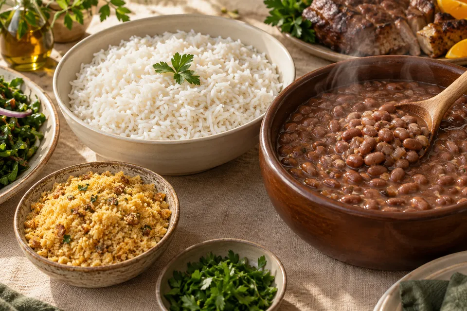
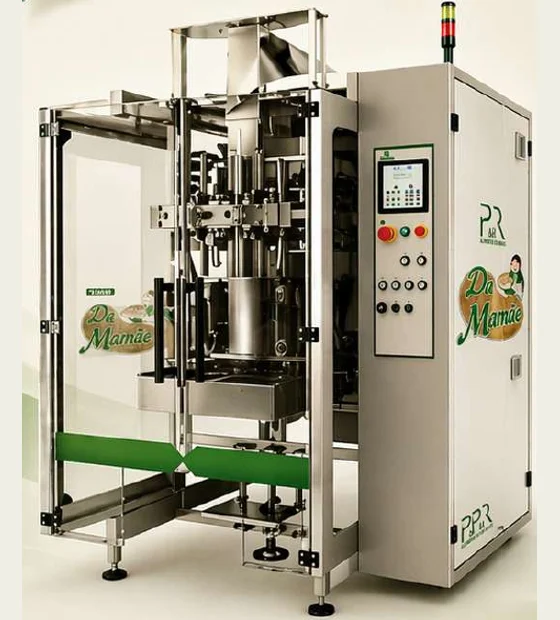

Da Mamãe · Feijão
Feijão Carioca
Feijão carioca Da Mamãe. Uma variedade para valorizar os sabores da cozinha brasileira.
Alimentos que fazem parte da vida. Qualidade e experiência para abastecer o seu negócio e estar presente em cada refeição.

Feijão carioca Da Mamãe. Uma variedade para valorizar os sabores da cozinha brasileira.

Arroz branco, polido, longo fino, tipo 1. Produzido no Rio Grande do Sul, para acompanhar os sabores de todos os dias.

Açúcar cristal branco para bebidas, sobremesas e aquele doce que reúne a família.

Farinha de mandioca para farofas, acompanhamentos e receitas cheias de sabor.
A P&R nasceu da união de duas empresas com 30 anos de experiência em comercialização, beneficiamento, empacotamento e distribuição de feijão, arroz e açúcar.
Reunimos marcas e produtos para atender diferentes escolhas, aproximando a qualidade dos alimentos das necessidades de quem compra, vende e leva para casa.
Do feijão de todo dia à receita de domingo, Da Mamãe acompanha os pequenos momentos que se tornam boas memórias.
Conheça a família Da MamãeNa mesa.A família de produtos para todos os dias.
Conhecer produtos Du ChefFeijões carioca e preto.
Conhecer produtos PérolaMais opções para sua mesa.
Conhecer produtos XodóO feijão do dia a dia.
Conhecer produtos MaravilhaVariedade para seu negócio.
Conhecer produtos EliteParte do portfólio P&R.
Consulte o comercialDa criação da embalagem à entrega: uma parceria para desenvolver sua marca de alimentos com tecnologia, segurança e qualidade.
Quero desenvolver minha marca
Embalagem personalizada e estratégia para o seu mercado.
Tecnologia e processos orientados à qualidade dos alimentos.
Apresentação que valoriza a identidade da sua marca.
Soluções que acompanham o produto até a entrega.
 35 min
35 minFeijão, farinha e temperos se encontram em um prato generoso, com a cara do almoço de domingo.
Ver receita 30 min
30 minColorido, soltinho e fácil de combinar. Um jeito simples de renovar o arroz de todo dia.
Ver receita 20 min
20 minO encontro da farinha crocante com a doçura da banana. Vai bem com carnes, peixes e o seu prato favorito.
Ver receitaUma parceria que vai além do produto. Nossa distribuição atende todo o território nacional, conectando o portfólio P&R ao seu negócio.
Converse com nossa equipe sobre entrega, frequência de compra e condições para a sua região.
Consulte o atendimento na sua regiãoConte o que você precisa. Nosso comercial ajuda a encontrar os produtos e as apresentações para o seu pedido.
CSG 10 Lote 03, Galpões 01 e 02
CEP 72.035-510